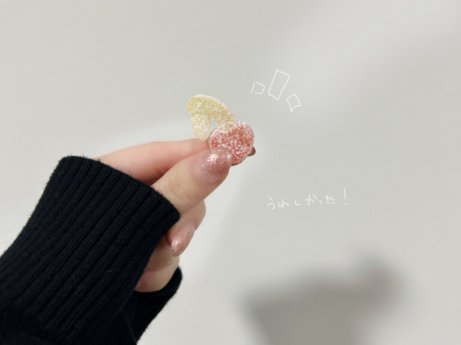

橘杏咲の立ち話もなんですから！ 第10回橘杏咲的“站着聊可说不完！” 第10回
皆さんこんにちは💫
大家好💫
5月だ〜！毎年思いますが、春ってあっという間に去ってしまいますよね…
5月啦〜！每年都这么觉得，春天真是一转眼就溜走了呢……
スウェット一枚で過ごしたいのですけど、朝夜は涼しかったり昼は暑かったりで難しいですよねぇ、。
本来想单穿一件卫衣出门的，可早晚偏凉、中午又热，穿衣真难拿捏呀。
4月は新年度で世間的にドタバタな1ヶ月ですが、皆さんご無事ですか…！！🥲
4月是新年度开启、整个社会都忙成一团的一个月，大家也都还安好吗……!!🥲
私はやはり、春休みからの切り替えが大変でした…約2ヶ月半も学校がないと学校があった時の感覚を忘れちゃうんですよね。
我果然还是很难从春假切换回上学模式……将近两个半月没上课，都快忘了上学时的节奏和感觉了。
夏冬休みは毎回この現象に陥ってます。でも、この現象に陥るのもあと数回と考えると寂しい…学生という称号とまだまだ仲良くしていたい〜！いや、卒業もしたい…😌 今の感覚を大事にして忘れないようにしよう…
每次寒暑假都会陷入这种状态。不过一想到以后经历这种状态的机会也没剩几次了，又觉得有些寂寞……我还想继续和“学生”这个头衔好好相处呀〜！不对，我也想顺利毕业……😌 还是好好珍惜此刻的感觉、别忘记吧……
今回コラムを書くにあたっていつも通り4月の予定表とカメラロールを見漁っていたのですが、春休みの反動もあってほとんどエンジョイした形跡が残っていませんでした。
这次动笔写专栏前，我照例翻遍了4月的日程表和手机相册，结果因为春假玩太嗨后的反作用力，几乎没留下什么玩乐的痕迹。
かろうじて友人のお誕生日会と妹のお誕生日会をしたことくらいでしょうか。4月は世間と共にドタバタの海に溺れていましたね。
勉强算得上的，大概也就只有给朋友过生日和给妹妹过生日这两件事吧。4月我跟着大伙儿一起淹没在忙碌的海洋里了呢。
友人とあまり会えなかったので、いつも以上に目立っていたのが「食」の写真でした🍚🍖🌟
因为没怎么和朋友见面，相册里比平时更显眼的就全都是“美食”照片🍚🍖🌟
外で美味しいものを食べる時は基本毎回写真に残しているのですが、4月は美味しいものを食べに食べてました。特に、ソロで！
我在外面吃到好吃的基本每次都会拍照留念，4月真是大吃特吃了个够，而且尤其是独自一人吃！
新年度初めての大学の1週間偉いから美味しいお昼食べよ〜！明日は忙しいから先行投資でデザートに美味しいもの食べよ〜！と、何かとかこつけて贅沢1人ご飯を楽しんだ1ヶ月でした。
“新年度第一周大学坚持下来真棒，吃顿好的午饭吧〜！”“明天很忙，提前投资吃份美味甜点吧〜！”整个月都在找各种借口享受豪华的一人食。
うーーーん、圧倒的麺率！！！！！！🍜🍝 スパゲッティとラーメンのオンパレードですよ。特にトマトパスタと塩ラーメン。
嗯——面条占比简直压倒性!!!!!!🍜🍝 满屏都是意面和拉面轮番登场，尤其是番茄意面和盐味拉面。
そこに紛れるお肉と甘味。見てるだけでお腹の空くカメラロールだぁ。
中间再穿插着肉类和甜品。真是光翻相册就能看饿的图库呀。
美味しいものを食べてる時って最高に幸せじゃないですか？私は美味しいものでよく自分のご機嫌をとってます。
吃到美食的时候不是超级幸福吗？我经常靠吃好吃的来哄自己开心。
皆さんは何をしている時が1番幸せですか？？
大家在做什么事情的时候觉得最幸福呢??
私は、美味しいものを食べてる時、と言いたいところですがやはり睡眠？？でも友人とわいわい遊んでいる時の幸せ指数は激高だし、お仕事をしている時も幸せだし…うーん
我本来想说“吃美食的时候”，但果然还是睡觉？？不过和朋友热热闹闹一起玩的时候幸福指数也爆表，工作的时候也很幸福……唔……
やっぱり、こうやって全部幸せすぎて何が1番か選べないよ〜！ってなっている瞬間が1番幸せかもです。なんて！
果然，像这样因为每件事都太幸福而纠结“选不出哪个第一啦〜！”的瞬间，说不定才是最幸福的吧。开个玩笑！
これは、しあわせのお裾分け🍒
把这份幸福分给大家一点点🍒

ばっどがーるの「なんかすごいワルい生配信」皆さん、見てくださりましたか！
《坏女孩》的特别直播“なんかすごいワルい生配信”，大家都看了吗！
初めて生配信特番！キャスト4人で皆さんの前でお話をするのは初めてでしたね🥰🥰
人生第一场直播特番！也是四位声优第一次在大家面前同台聊天呢🥰🥰
大きな発表としては、アニメばっどがーるキャスト4人で「天狼群」としてのユニット活動が始動するよ！というのがありました！
重磅消息之一，就是动画《坏女孩》的四位声优将组成组合“天狼群”正式展开组合活动！
アーティスト写真見てくださりましたか！？最高にワルカッコいいでしょう！！⛓️😈
大家看过艺人宣传照了吗!? 是不是又坏又帅气绝了!!⛓️😈
衣装もそれぞれのカラーが取り入れられていたりととってもオシャワルかっこいいんです！！
服装也融入了各自的代表色，又时髦又叛逆又帅气!!
私は写真を撮っていただくのに慣れていなさすぎて、大苦戦しました。どの角度だと良きように映るのか、ポーズのレパートリーの少なさなどなど、。お勉強が必要ですね📖💧
我实在太不习惯被拍硬照了，拍摄时苦战了好久。哪个角度更上镜、摆姿势的储备太少等等……还得好好做功课呀📖💧
撮影中、るんさん美里さんにいなさんやスタッフの皆さんが見守ってくださっていたのですが、お三方のヤジ(?)にニヤニヤが止まらなくなったり恥ずかしくなったりで大変だったんです！！
拍摄过程中，るん前辈、美里前辈、にいな前辈和工作人员们都在旁边看着，三位前辈在场边起哄（？）让我忍不住一直笑场又害羞，可真是手忙脚乱!!
きっとこの時のお話しもいずれどこかですると思うのでその時にまた詳しくお話しさせてください😌
这背后的趣事以后肯定会在某个场合聊到，到时候再详细讲给大家听哦😌
そして、天狼群 1st Digital Singleである「ツッパリHigh School Rock'n Roll(登校編)」、聞いていただけましたか！？
还有，天狼群的首支数字单曲《ツッパリHigh School Rock'n Roll(登校編)》，大家都听了吗!?
まさかあの、横浜銀蝿さんのあの、曲をカバーさせていただける日が来るとは。しかもギターはJonnyさんご本人に弾いていただけるなんて。
万万没想到竟然会有翻唱横滨银蝇那首经典名曲的一天，而且吉他还是请 Jonny 先生本人亲自演奏的！
ワルカッコかわいくてとっても楽しいカバーになっておりますので、まだの方も何度も聴いてるよ！という方もたくさん聴いてくださいねっ！！これを聴いていってきまーす！すると晴々とした気持ちでお家を出発できるのでおすすめです✊🏻🤍
这首翻唱既坏酷又可爱、超级欢乐，无论还没听过的朋友还是已经循环好多遍的朋友，都请多多去听哦!! 听着这首歌喊一声“我出门啦！”走出家门，心情会瞬间变得神清气爽，强烈推荐✊🏻🤍
大きな発表の後には、4人でゲームをしたのですが…くっ、嘘をつくのは難しい。頭の回転速度も必要なんだなと学びました。難しかったけど、楽しかったです。
重大发表之后四个人一起玩了游戏……可恶，说谎真的好难啊。我学到了这也需要很快的脑筋转弯速度，虽然难但超好玩。
終始わちゃわちゃで、私たち4人のいつもの空気感が皆さんにも伝わったのではないでしょうか！とっても楽しい先輩方です。
全程热热闹闹的，我们四个人平时的融洽氛围应该也传达给大家了吧！前辈们真的超级有趣。
「ワンって言ってよぉ〜」についてはまたどこかで……ワンはしません。
至于那个“汪一声嘛〜”的梗就留到下次再说……我是不会汪的。
(肉丸先生に描いていただいた優ちゃんとの可愛すぎるイラストは毎日見るところ(?)にいますというのはここだけの秘密)
（肉丸老师画的那张我和小优的超级可爱插画，就摆在我每天都能看见的地方（？），这可是只有这里才说的秘密哦）
そしてそして！待ちに待った……『プリンセッション・オーケストラ』の放送がスタートしました！！！
紧接着！万众期待的……《Princession Orchestra》终于开播啦!!!
うおおおお！！どんどんぱふぱふ！！！🎊✨
呜喔喔喔!! 敲锣打鼓撒花欢呼!!!🎊✨
ここから1年間、毎週日曜あさ9時から放送されるなんて！！毎週？1年？？まだ実感が湧いてないです。
从现在起整整一年，每周日早上9点都会播出!! 每周？一整年?? 我还是没什么实感。
第1話の放送は、オルケリア3人でお泊まりリアタイをしたんですよぉ！いや〜！たのしあわせすぎました！
第1话开播时，我们 ORCHERIA 三个人还办了过夜派对一起实时追番哦！哎呀〜实在太快乐太幸福了！
やっぱり3人でのお泊まり会は話しが尽きないので永遠に起きていられる、。
果然三个人聚在一起过夜派对就是聊不完，感觉能永远不睡觉聊下去。
流石にオールではないのですが、お情け程度の睡眠で朝眠いはずが、プリオケの放送で眠気はどこかへ飛んでいってしまいました。
虽然还不至于通宵，但只勉强眯了一小会儿，早上本来应该困得不行，结果一看到动画播出，困意瞬间飞到了九霄云外。
いや、かわいいとかっこいいと綺麗と、、、キラキラで溢れてる！！！
天哪，可爱、帅气、唯美……满屏都洋溢着闪耀的光芒!!!
小さい頃夢に見た不思議の国に、綺麗なプリンセス、そして音楽。キラキラと情報量の濁流に押し流されないよう終始力みながら画面に食いつくように観てました。
小时候梦寐以求的奇幻国度、美丽的公主，还有动听的音乐。为了不被这股闪耀与信息量的洪流冲走，我全程绷紧身子、两眼死死盯着屏幕看。
1,2,3話は私がお声を担当している一条ながせちゃんの出番がなかったのもあり、純粋にいち視聴者としてプリオケを楽しんでいました笑
因为第1、2、3话里我配音的一条流星还没有出场，我纯粹是以一名普通观众的身份看得很尽兴（笑）。
最初のアフレコをしたのが少し前なのもあり、全てが新鮮でしたね。プリオケ、面白すぎる。
加上最初配音也是好一阵子之前的事了，看成片时一切都很新鲜。《Princession Orchestra》实在太好看了。
1話から歌いながらの戦闘シーンがありましたが、本当に、歌って戦ってる！！と感動していました。曲はもちろん、ジールの歌声、戦っている姿、全てカッコ良すぎました。そして美しい。
第1话一上来就有边唱歌边战斗的场面，我感动得直呼“真的在边唱边打架!!”。曲子自不必说，Zeal的歌声和战斗英姿全都帅炸了，而且美极了。
2話のリップルの初めての戦闘も最高だった、、、一所懸命、なっちを守るために戦う姿にベタな感想ですが、勇気をもらいました！あの本当に、必殺技もすごくてぇ…
第2话 Ripple的初次战斗也绝了……看着她拼尽全力守护夏亲的身影，虽然听起来很老套，但我真的从中获得了勇气！而且必杀技也超级震撼……
そしてついに、4話で一条ながせちゃんが登場しましたね！！！まさに流れ星みたいな子でしたよね。元気、元気がすぎる。勢いがすごい。
然后终于在第4话里，一条流星酱登场啦!!! 她简直就像一颗流星一样，元气满满，元气过头了，气势惊人。
でも少し曇っている…?本物とは…?寂しそうなあの表情、。くっまだまだ奥深そうな子でしょう！！！
可又好像藏着一丝阴霾……？所谓“真正的东西”又是什么……？还有那抹显得有些寂寞的神情……可恶，她一定是个内心很有深度的孩子吧!!!
って、語り出すと止まらなくなってしまう！！💧 プリオケの感想は生配信などでもお話しできるのでここではこの辺にしておかなくては。脳から文字に起こすとタイピングが止まらなくなってしまうんですよね。頭の中のナビーユがここまでぇ！って言ってますしね！
哎呀，一聊起来又刹不住车了!!💧 《Princession Orchestra》的感想在直播里也能聊，这里得先收住了。把脑子里的想法直接敲成字时手指根本停不下来，脑海里的纳比尤已经在喊“到此为止啦！”了！
放送後にプリオケ公式Xに投稿されている毎話のアフレコ台本の表紙、可愛すぎませんか！？👸🏻♡ 毎回台本をいただく度の楽しみなんです。アフレコ台本もたからものですね。
每话播出后官方 X 都会晒出的配音台本封面，是不是太可爱了!?👸🏻♡ 每次拿到新台本我都特别期待，这些配音台本也全都是我的宝物。
まだまだお話ししたいことばかりですが、また今度にも取っておくことにします。お話ししたいことが尽きないって素敵かもしれない！
虽然还有好多好多想聊的事，就先留到下次吧。有说不完的话可以分享，本身就是一件很美好的事呢！
皆さん、引き続き毎週日曜朝は早起きしてプリオケリアタイしましょうねっ！私も寝坊しないようにがんばるぞ〜！！(寝坊しても9:30から配信されるので絶望することはないです)
大家今后也要继续每周日早起实时追更哦！我也会努力不睡懒觉的〜!!（不过就算睡过头，9点半就会上线流媒体，倒也不必绝望）
あ！毎週土曜あさ9時に動画投稿されている「おたのしみ動画」も是非チェックしてください！なんか、色々わちゃわちゃやっとります！！！是非に！
啊！每周六早上9点更新的“趣味花絮视频（おたのしみ動画）”也请大家一定要看！我们在里面热热闹闹地搞了好多好玩的!!! 千万别错过！
語る口、ではなく、タイピングの手が止まらない。のですが、今回はこの辺りで！🙇🏻♀️
不是说不停的嘴，而是敲不停的手……不过这回就先写到这里啦！🙇🏻♀️
冒頭で「幸せなことが多すぎて、1番って決められないのが幸せ」なんていってましたが、改めてそうかもしれないなと思いました。
开头我说“幸福的事太多以至于选不出第一名，这本身就是最幸福的”，现在回想起来，觉得还真是如此呢。
こうして何をしたよ！って皆さんにお話しできることも幸せですし、コラムを書こうと思い出を思い返すたび幸せしかないなおいっ！ってなってます笑
能像这样向大家分享自己的日常就已经很幸福了，每次准备写专栏翻看回忆时，都会忍不住感叹“喂，怎么全都是幸福的事啊！”（笑）。
すみません、私このコラムで毎回のように幸せ〜って語ってますね。立ち話もなんですから！とか言いつつ、立ち話というよりも、人生の惚気になっているかもです！！ゆ、許してください！！
不好意思，我每期专栏好像都在不停地讲“好幸福〜”。嘴上说着《站着聊可说不完！》，与其说是闲聊，倒更像是在炫耀人生的甜蜜日常了!! 请、请原谅我吧!!
なんかまだお話ししたいことがあった気がするけれども…まぁ、また思い出したらコラムかXに記録しておきます！
总觉得好像还有什么事想聊来着……算啦，等想起来再记在专栏或 X 上吧！
では、いつも通り5月の目標を！5月の目標はズバリっ！！！
那么，照例公布5月的目标！5月的目标就是——
『油断大敵、まだ無理しない！』
《切忌大意，依然不要勉强！》
です。4月に引き続き、切実に。堅実に。
就是这个。延续4月的基调，发自肺腑，脚踏实地。
まだ新学期など諸々慣れていないので、ギアは上げすぎず、自分の身体を置いていかずにがんばっていきたいと思います！皆さんも無理は禁物ですよ！
因为新学期等各方面还没完全适应，我想不要一下子把油门踩太猛，照顾好自己的身体稳步努力！大家也切忌勉强自己哦！
ここまで読んでくださり、ありがとうございました！テーマや質問、感想など、引き続きお待ちしております！！ではっ🌟
非常感谢大家一直读到这里！继续期待大家的主题建议、提问和感想哦!! 那么下次见啦🌟
橘さんに質問！向橘小姐提问！
Q：人生で一度はやってみたい“大冒険”ってありますか？（京都府・みやこもち）
问：请问您有人生中至少想尝试一次的“大冒险”吗？（京都府·みやこもち）
みやこもちさん、ご質問ありがとうございます！！
みやこもち，感谢你的提问!!
そうですね、少しベタですが、1人で海外旅行でしょうか！！！
让我想想，虽然稍微有点老套，大概是一个人出国旅行吧!!!
海外に行ったことは何回かあるのですが、流石に1人で行ったことはなく…いつか行ってみたいですね！
虽然我去过几次国外，但毕竟还没一个人独自出国过……真希望有一天能试试看！
今大学で様々な言語に触れる機会が多いので、今少しでもモノにできたら海外旅行が楽しそうだなぁと思ったり。
现在在大学里有很多接触不同外语的机会，心想如果现在能稍微掌握一点，出国旅行一定会更有意思吧。
でも1人だと寂しくなる予感しかしないので、とっても仲の良い友人たちと、期間長めの海外旅行にいきたいです！いつか！いつか…！！
不过我有强烈的预感，一个人去肯定会觉得孤单，所以还是想和最要好的朋友们一起去一趟时间长一点的海外旅行！总有一天！总有一天……!!